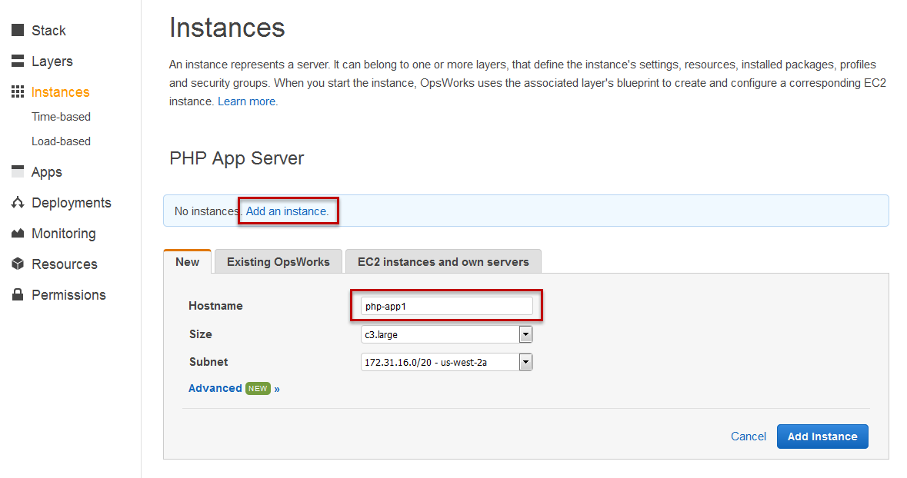

What's wrong with AWS OpsWorks?
Let me start with a note: I actually really like OpsWorks. I like getting things done quick and easily and the clean domain model (layers != instances != apps != deployment). We run a couple of Magento stores (medium-sized and large ones) on OpsWorks and we never had any major problems with it. However, in my opinion there are a couple of things fundamentally wrong with OpsWorks. You may choose to ignore those, use OpsWorks and be happy with it, or question those and look for a different solution...
And here's another note: Some of the arguments in this post aren't necessarily specific to AWS OpsWorks. Parts of this article could also be titled "What's wrong with Chef?" or even "What the hell are you doing there..."
I find myself discussing different architecture approaches almost every week and also given that I've been a big fan of OpsWorks up until a year ago I feel it's time to write this blog post to share some of my latest thoughts on OpsWorks and cloud infrastructure and deployments in general.
OpsWorks is not "Cloud"
The "cloud" might be the biggest buzzword of the last years, but besides making you buy stuff there's something this whole cloud thing really stands for: Being able to spin up resources (and that's not necessarily only server instances) quickly and shut them down when you don't need them anymore.
The ability of spinning up instances is the true essence of a cloud deployment and at the same time that's the biggest difference to traditional hosting companies turning on a physical server for you after you signed a one-year contract.
I believe that an immutable infrastructure (the whole pets vs cattle thing...) is critical to a solid architecture, clean deployments and reliable operations...
And that's exactly my problem with OpsWorks. In this screenshot you can see how you manually have to add instances and name them. These instances are clearly "pets", not "cattle":

OpsWorks is not "AWS"
OpsWorks is great is your application fits their mindset. Of course you can add any number of layers and add your own stuff there, but after all this isn't what AWS is all about. AWS is about using their services. If you need Redis you'll most likely want to use ElastiCache. Your app might use some S3 buckets, CloudFront distributions, queues, email services, and most likely some more services. All of those are not part of the OpsWorks stack and you'll have to find a good way to manage them in combination with your OpsWorks stack.
Also, if you need to break out of the classic "loadbalancer/appserver/database" architecture - for example because you're adding a Varnish layer in between, you need an additional scalable set of backend or worker servers, or you need multiple loadbalancers pointing to your servers - you'll end up fiddling a lot with the layers and manually "wiring" them correctly.
Eat you own dogfood: Auto-scaling
The thing that bothers me the most is the way OpsWorks handles "auto-scaling": Behind the scenes this is not using the regular AWS autoscaling. Instead you'll have to manually create all the instances (and ideally boot them once, since this will take forever...) you might need at some point in time. Then they will sit there and based on some metrics OpsWorks will only decide whether to start them (and re-run Chef) or shut them down.
Eat you own dogfood: Deployment
OpsWorks uses the Chef deploy cookbook, which is simple and works well, but if you're already deployment builds on the same set of servers would this be a great opportunity to use AWS Code Deploy for this? I understand the OpsWorks was released a long time before CodeDeploy was out, but still now there's another fundamentally different way of doing the same thing. (Btw, while being an interesting implementation, I think using AWS CodeDeploy to manage deployments to existing resources is also wrong for the same reasons mentioned above. I strongly believe that you should never have to interact with an instance after the initial setup.)
OpsWork deploys new packages by preparing them in a different release folder an then switching a symlink. While this is a common practice there are three problem with the way OpsWorks does that: 1.) The switch doesn't happen synchronously. That means that some instances might run on the old release while some run on the new release. Depending on your build package and when the OpsWorks agent on the instances picks up the new deployment this can be anything between a couple of seconds to a couple of minutes. 2.) If the deployment fails on one of the servers the deployment will not be rolled back. Instead that server will continue to run on the old release while the other servers run on the new release 3.) Apache will be restarted after a every deployment. While this behavior is easy to bypass it really doesn't make sense to have this short artificial downtime in place.
Eat you own dogfood: Lifecycle events
Lifecycle events are very handy and especially the "configure" is great in many different scenarios. But why aren't the implemented via SNS or are at least triggering SNS notifications by default?
Stack management
The OpsWorks UI is nice and clean, but configuring everything via the AWS Console shouldn't be your setup workflow. You can create most elements (stacks, layers, app, instances, load balancers) via CloudFormation, but half-way setting up a higher-level service via CloudFormation and then let OpsWorks do the rest for you doesn't feel right to me...
Abstraction
The two most critical skills of a programmer, forming good abstractions and avoiding complexity, are largely untouched by CS curriculums
— Nathan Marz (@nathanmarz) January 4, 2016OpsWorks and specifically Chef is just way too much. In my opinion it adds so much complexity and doesn't add any real value. Given that you'll probably be using other AWS services really the only thing you might need to do is set up and configure a web server. And how is it easier to install Ruby and Chef, write your instructions in a DSL, when really you only need a couple of lines of shell script to do the same thing?
After all we're not managing a huge fleet of different servers here. We don't need/want to remote control them. And most importantly: after they have been provisioned during the boot process we don't want to touch them ever again.
Also, all of the provisioning shouldn't be happening while booting the instance you're about to use right now. Ideally this happens as part of your build process and will then be baked into an AMI. While it is possible to use custom AMIs with OpsWorks the whole idea of OpsWorks doesn't really encourage you to use pre-baked AMIs (plus spinning up a standalone instance for baking that acts like an OpsWorks instance but isn't managed via OpsWorks isn't trivial...)
So, should all this provisioning really be happening while OpsWorks is scaling up because some traffic is hitting your website?
And independently of when this happens, but even less significant if this is a separate process in your continuous deployment pipeline, how does throwing Chef at this make things easier?
Customization
OpsWorks allows you to customize the chef recipes, but unless you decide to start with a custom layer this usually ends up in a big mess of you trying to overwrite files in the default recipes to prevent them from being executed and fiddling with having everything loaded at the right time in the right order.
If you use a custom layer you're losing much of what OpsWorks is all about. So now try replacing Apache with Nginx + php-fpm, install PHP7 or prevent Apache from restarting after every deployment (yep: restarting, not reloading).
Generic all-rounder vs. lightweight solution
OpsWorks supports Node.js, Ruby, Java and PHP. Although, depending on the layer type you choose, only the things that are required will be installed (except for Ruby, that's always there because of Chef) all this stuff if still sitting there in the middle of all the cookbooks somehow being part of the code you'll have to deal with.
In order to make this work OpsWorks does some tricky stuff behind the scenes (replacing the Chef run list with a dynamically generated one depending on your configuration) which makes it hard to reproduce and debug processes outside of the OpsWorks-driven processes.
After a while you'll be able to navigate the auto-generated JSON snippets and log files, but is this really what you want to be doing as your main development workflow? How is all this easier than having a clear script that does exactly what you need?
Portability
Yes, OpsWorks uses Chef. But have you tried running the exact same set of scripts outside of OpsWorks? I know there are a couple of approaches that try bringing the OpsWorks recipes to you local VirtualBox instance, but last time I checked none of those were really easy to use, transparent or worked really well. After all some of the Chef recipes and the way Chef is integrated into OpsWork is really specific to OpsWorks and hard to extract.
Provisioning a server vs. setting up your infrastructure vs. streamlining your deployments
Way too many discussions are focused on what to use to provision the instances. But that's really the most boring part. Although I have a strong preference for keeping it as simple as possible and not digging through multiple layers of abstractions and dependencies I really don't care about how the server is provisioned. After all the only thing that counts is that the server is listening to a given port and the build is installed in a given directory. The operating system, the webserver (Apache vs. Nginx), PHP version,... are totally replaceable (Note, that I'm not saying that the specifics don't matter. I'm just saying that it doesn't matter HOW they get there as long this is an automated and manageable process).
The way more interesting part is how to roll out and manage your infrastructure (and how you orchestrate deployments). And that is way more than just a collection of EC2 instances. Again, there are a couple of tools out there that help you doing this. My strong preference is to use CloudFormation. We've built some simple tooling around managing and deploying CloudFormation (StackFormation, AwsInspector) and this works really well (especially leveraging custom resources backed by AWS Lambda for the more advanced stuff...).
At the same time CloudFormation is also our deployment strategy. We'll spin up a new deployment stack and then update Route 53 to point to the new load balancer we just created. Once this is completed we delete the old deployment stack(s).


This website uses disqus for the commenting functionality. In order to protect your privacy comments are disabled by default.
Enable Comments